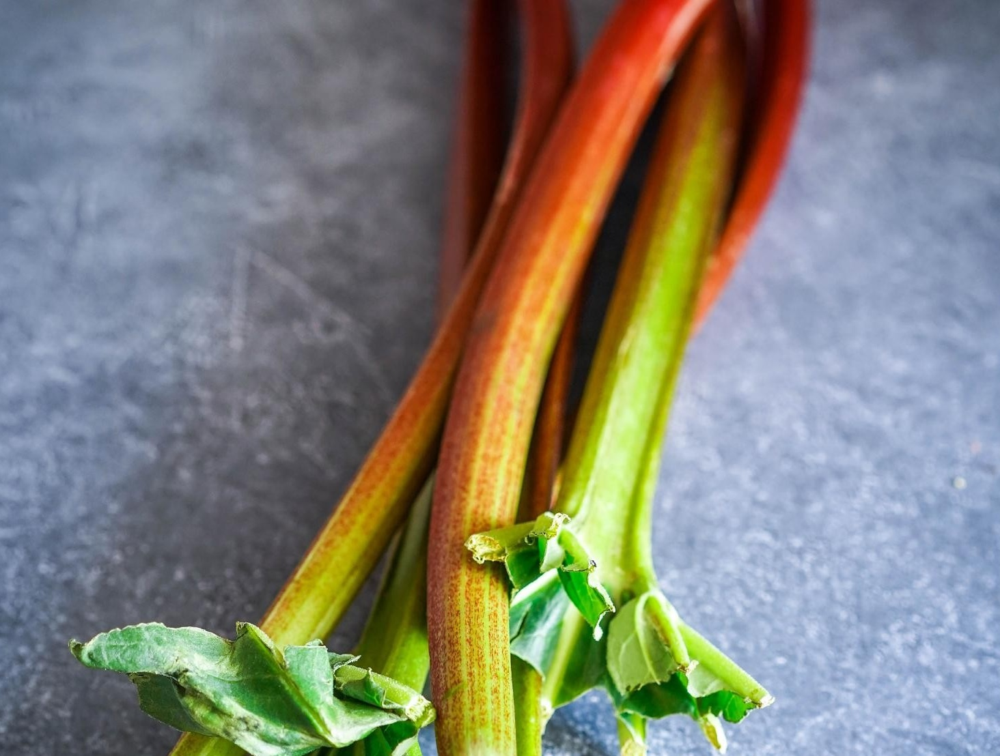

У ревеня две стороны — сладкая и кислая. Повернется он к нам той стороной, какой захотим. В дуэте с сахаром ревень великолепно играет в десертах, а стоит добавить немного соли, остроты и исключить сахар — и уже совсем другая история.
Вообще, ревень уверенно входит в моду. Удивительно, что эти красивые розовые стебли, похожие на лакричные конфеты, оценили у нас только сейчас. Возможно, это связано с несколько недемократичной ценой. И это притом, что вырастить ревень у себя на даче ничего не стоит. А вот с гастрономической точки зрения оно очень даже стоит того! Ревень даже красуется на обложке книги Дэб Перельман, одной из самых популярных кулинарных блогеров (The Smitten Kitchen). Она готовит с ним очаровательные треугольнички из песочного теста по мотивам «ушей Амана» (гоменташи). Оторваться от них невозможно!
Сезон ревеня начинается в начале июня и длится до конца месяца, позже наступает «вторая волна», которая длится с середины августа и до конца сентября.
Как хранить
Ревень лучше готовить свежим, но он довольно долго хранится в отделении для овощей холодильника, до двух недель. Даже если он немного смягчится, не страшно. Вы все равно подвергнете его тепловой обработке.
Учитывая сезонность ревеня и его цену, если вам удастся заполучить недорого или вырастить много ревеня, заморозьте его. Он прекрасно для этого подходит. Помойте и обсушите стебли, нарежьте кусочками по 2–4 см, уложите в пакеты для заморозки и отправьте в морозилку.
Как чистить
Чистить ревень очень просто. Если он с листьями, удалите их. Обрежьте сухие кончики, помойте стебли и высушите. Готово!
Важно
Помните, в ревене содержится щавелевая кислота, которая опасна для людей с заболеваниями ЖКТ и почек. В этом случае сырым его есть не рекомендуется, но в термически обработанном виде и в умеренных количествах — можно. Наибольшая концентрация кислоты — в листьях, поэтому их в пищу употребляют крайне редко, а в продаже встречаются только черешки.
Идеи повседневных блюд с ревенём
Ревень — прекрасный гарнир к птице или свинине. Попробуйте обжарить курицу с тимьяном, острым перчиком, солью и паприкой, а затем добавить к ней ревень с луком и потушить до готовности. Или распластать курицу «бабочкой» и запечь на подушке из ревеня и лука. К свиным ребрам приготовьте соус из красного лука, ревеня, вяленой вишни, бальзамического уксуса и меда. Лук обжарьте до мягкости, а потом тушите все вместе, пока ревень не превратится в соус.
Лето — пора легкости, поэтому ревень — отличный ингредиент для салата. В некоторых случаях он может остаться сырым для кислинки, а еще он прекрасно выступит карамелизованным. Представьте: листья корна или другого листового салата, поджаренные грецкие орехи, сладковатая горгонзола и кусочки ревеня, обжаренные в меду со сливочным маслом. В таком же виде ревень будет прекрасно сочетаться с обжаренной куриной печенью. Салатные листья, печень, ревень, сладкий красный лук, кедровые орешки.
Ревень — гениальный гарнир к жирной рыбе! Подайте макрель (скумбрию), обжаренную в панировке из овсянки, с соусом из ревеня: просто тушите кусочки ревеня с тимьяном, капелькой сахара и воды под крышкой. Или запеките скумбрию и подайте к ней пряный соус из ревеня с имбирем, бадьяном, апельсиновым соком и цедрой.
Сладкоежкам ревень тоже придется по вкусу, потому что с ним получаются просто гениальные сладкие блюда. Абсолютно не приторные, за счет естественной кислинки ревеня. Первый в списке — крем-брюле с ревенем. Все по классике, но перед тем как залить в формочку яично-сливочную смесь, нужно выложить туда по столовой ложке соуса, сваренного из ревеня с добавлением розмарина, сахара и лимонной цедры. Сами сливки можно тоже настоять на стебле розмарина.
«Павлова» с соусом из ревеня и свежей клубникой. Кстати, клубника и ревень — прекрасная пара, очень гармоничная. Их часто сводят вместе в кексах, вареньях, мороженом и пирожных. А еще в коблере с имбирем, который лучше всего подавать теплым с ванильным мороженым. Если вы еще не приобщились к домашнему мороженому, можно начать с сорбета из ревеня и клубники. Или хотя бы подать к обычному ванильному мороженому соус из ревеня с красным вином, корицей и гвоздикой. Тарт-татен с ревенем и клубникой — волшебен.